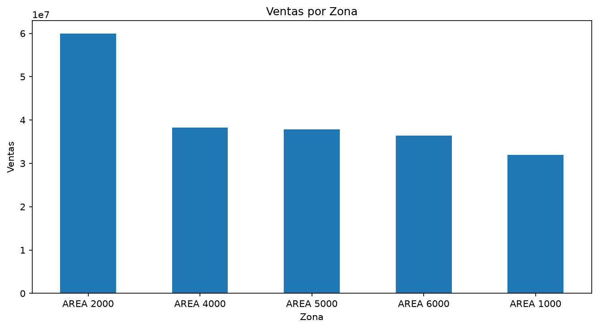
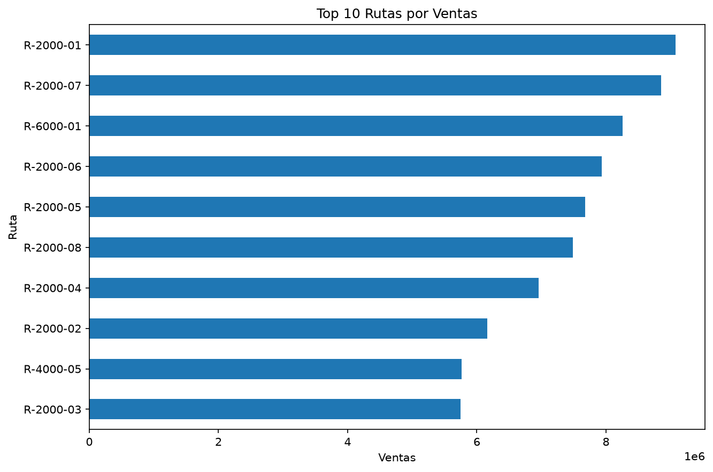
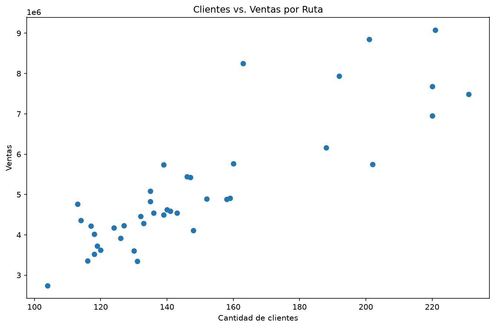
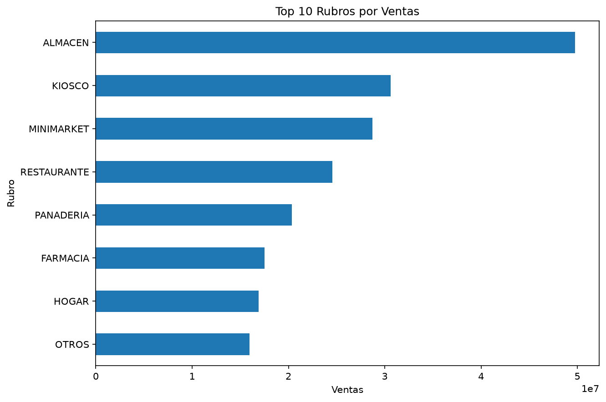
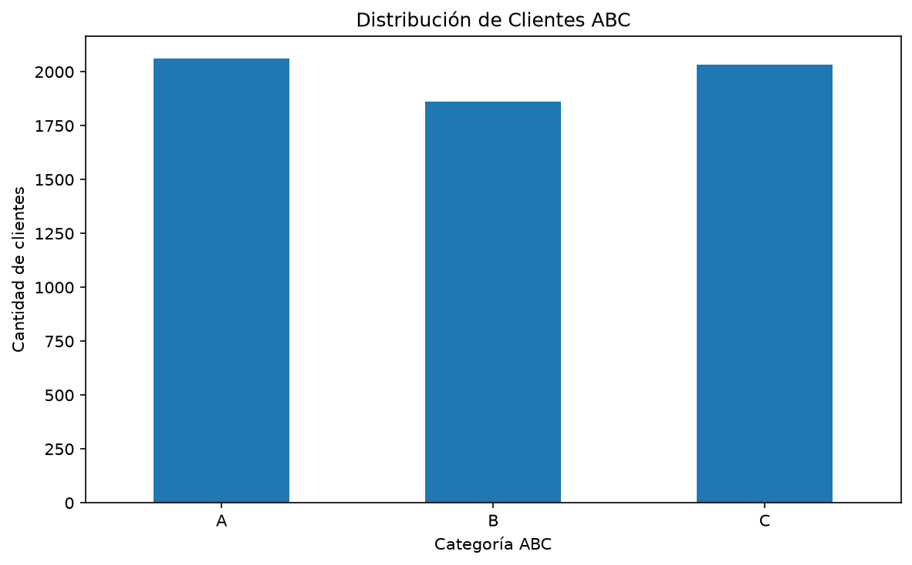
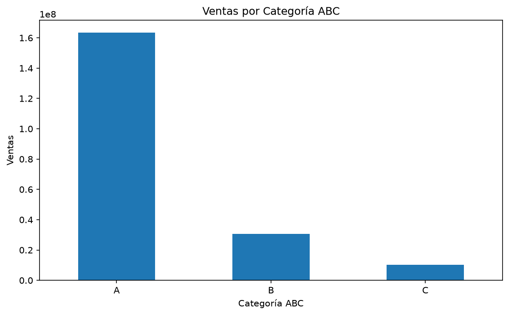

01 · Ventas por zona
Comparación del volumen de ventas entre las diferentes áreas comerciales analizadas.

Proyecto 01 · Análisis exploratorio
Preparación, análisis y visualización de datos comerciales para identificar patrones de ventas, desempeño de rutas y oportunidades de segmentación.
01 / Contexto
Este proyecto analiza información comercial de clientes, ventas, zonas, rutas y rubros con el objetivo de identificar patrones de comportamiento y oportunidades de segmentación.
El análisis utiliza Python para realizar la preparación, agregación y visualización de los datos.
02 / Objetivos
Desde una perspectiva comercial, no todos los clientes, rutas o zonas tienen el mismo impacto sobre las ventas. El análisis busca responder:
03 / Alcance
El análisis comercial se concentra exclusivamente en las áreas:
La estructura utilizada sigue la jerarquía Área → Zona → Ruta → Cliente → Ventas → Rubro.
04 / Proceso
Revisión de estructura, tipos de datos, registros, clientes y variables disponibles.
Normalización de variables y definición del universo comercial correspondiente a las áreas seleccionadas.
Agrupación de ventas por zona, ruta, cliente y rubro para identificar patrones comerciales.
Aplicación de metodología ABC basada en la participación acumulada de las ventas de los clientes.
Generación de gráficos mediante Matplotlib para facilitar la interpretación de los resultados.
05 / Tecnología
06 / Resultados visuales
Comparación del volumen de ventas entre las diferentes áreas comerciales analizadas.

Identificación de las rutas con mayor volumen de ventas.

Relación entre la cantidad de clientes y el volumen de ventas generado por cada ruta.

Identificación de los principales rubros comerciales según su volumen de ventas.

Clasificación de clientes según su contribución acumulada a las ventas.

Comparación de la participación de ventas entre los segmentos A, B y C.

07 / Interpretación
El análisis ABC permite identificar una concentración significativa de las ventas en un grupo de clientes con mayor contribución.
Esta segmentación puede utilizarse para priorizar esfuerzos comerciales, dar seguimiento a clientes estratégicos y planificar rutas.
El análisis de rutas y zonas complementa esta segmentación desde una perspectiva territorial y operativa.
08 / Transparencia
Para proteger la confidencialidad de la información comercial, los datos publicados en este portafolio son sintéticos.
La estructura de los datos fue diseñada para conservar relaciones útiles para demostrar las técnicas de análisis sin publicar información comercial real.
Los datos, nombres de clientes, rutas, ventas y coordenadas publicados en este proyecto son ficticios y se utilizan exclusivamente con fines demostrativos.
09 / Aplicación
Las técnicas utilizadas en este proyecto pueden aplicarse a escenarios reales de análisis comercial, incluyendo: